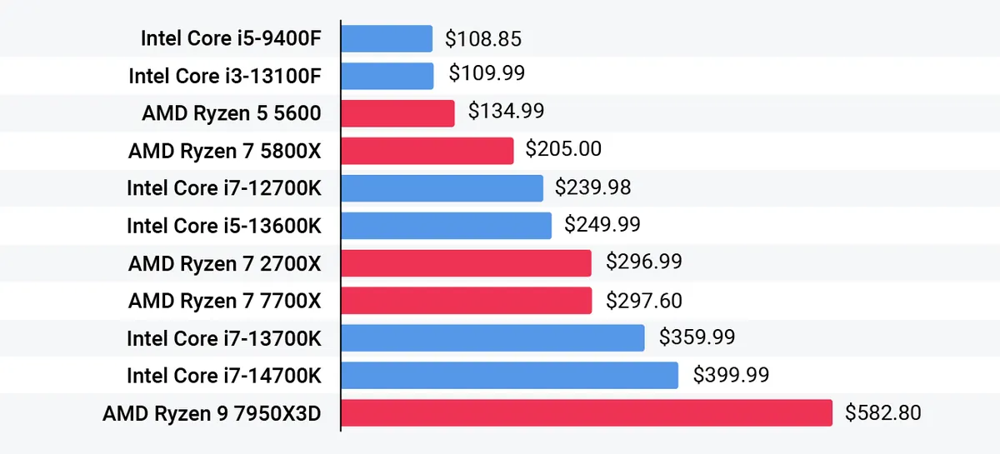
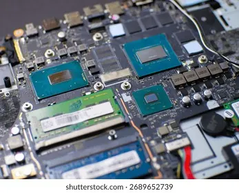

Laptops
Intel vs AMD Laptops: Which Processor Is Right for You?
Understand Intel and AMD laptop processors by performance, battery life, graphics, price and workload before choosing your next laptop.
Introduction: Look Beyond the Brand Name
Both Intel and AMD produce processors for a variety of laptops. Whilst each brand provides various families their products will vary in performance. It is not possible to know which laptop you're getting from just the brand.
The performance of the laptop can depend on what generation of processor it is, exact model, TDP, cooling and the rest of the laptop specs. Laptops with processors from the same company can vary greatly between models due to the cooling, ram and power management. Check the whole package of the laptop and look for unbiased reviews.

1. Know the model and generation of the processor.
Both brands have naming and model numbers to identify different families of processors. These can sometimes change over time so don't always go off the assumption that a higher numbered model means it's newer/faster. Check the exact model and generation on the official spec sheet.
Look out for how many cores the processor has, threads if applicable, clock speeds, cache, TDP and the type of memory it supports. Whilst this gives some useful info, it won't give you the real world performance. Some processors will be designed for thin and light laptops meaning they'll be more energy efficient, whilst others may have a bigger cooling system.

2. Performance for general use such as studying/office.
Most current Intel and AMD processors will be more than sufficient for web browsing, email, video calls, office tools and general studying. The keyboard, screen, battery, RAM, SSD and build of the laptop may be more of an issue than the small difference in CPU benchmarks.
Ensure you have enough RAM for how many apps you'll be running. An SSD will help your system boot up quicker and open files quickly. If your work is mostly document based and online learning, you won't usually need to pay extra for a high-end processor.
3. Performance for development and creative uses.
Development can sometimes involve using code editors, local servers, virtual machines, containers and compiling. Creative applications can use either the CPU, integrated graphics or a dedicated GPU. Whilst having more cores can help with parallel processing, some applications may rely on single thread performance.
Check what your exact requirements are. If you're doing big software builds, 3D or video editing you might want a higher performing processor, extra RAM and dedicated graphics. However, some thin laptops may throttle the processor if they can't effectively cool during extended periods of work.
4. Integrated graphics and gaming.
Many Intel and AMD processors have integrated graphics which can perform well for general use, video playback and some light gaming. The performance can vary greatly depending on the generation of the processor, graphics and memory bandwidth. If you're wanting to play demanding modern games and creative applications that require high GPU usage, it is generally better to get a laptop with a dedicated graphics processor.
Check what the real world benchmarks are for the exact laptop. The cooling, ram and TDP can impact how well the graphics perform. If gaming is important to you, you should check the GPU, refresh rate, cooling and charging requirements.
5. Battery life.
The battery will be affected by many factors such as the screen size and brightness, battery size, wireless use, background apps and power settings from the manufacturer. Both Intel and AMD have energy efficient processors for portable systems, as well as higher performance ones.
Look for unbiased battery tests. A larger battery may give you longer battery life despite the processor being similar. A high resolution or high refresh rate screen may cause the battery to drain quicker. If portability is important, look at the whole laptop and see what the tested battery life is.
6. Heat and fan noise.
A high performing processor will require good cooling. A small laptop may get quite hot and have noisy fans during extended periods of work. A larger laptop may perform better as there will be more space for heat pipes, fans and airflow.
Look for reviews that test real world performance and temperatures. Check where the vents are and ensure they won't be blocked on your desk. Neither Intel or AMD guarantee a cooler laptop. It can depend on the chip and how the laptop is designed.
7. Price.
Look for laptops that are similar in price. If the processor looks like it would perform better in benchmarks but the screen, RAM, storage and build aren't great then it may not be the best value for money. However, if the laptop is lighter, quieter and cheaper despite having a slightly weaker CPU it may be a good choice.
Check if the laptop has a good warranty, service and upgrade options. Some laptops have soldered RAM/storage so it may not be easy to upgrade. Ensure you check these details before purchasing especially if you expect your software requirements to increase.
8. Who are you buying for?
Students and general office users will usually want a modern entry/mid range processor with enough RAM and SSD. Developers will want to check how many cores, RAM and support for their tools. Video editors and designers should check the benchmarks for their applications and if they need a dedicated GPU. Gamers should check the whole graphics setup and cooling.
If you're buying for a business fleet it may be easier to have a standardised set of options. Ensure the laptop is compatible with your OS, docking, security features and warranty service. Check the CPU performance.
Conclusion
Both Intel and AMD have great processors for laptops. Depending on what exact processor you're getting, cooling, graphics, RAM, battery, screen and price it may be better to go for one over the other. Decide what your main applications will be and look for reliable reviews on the exact models. Go for a balanced system. For many general users the overall quality of the laptop will be more important than the processor badge..
Need a hand with your printer or laptop?
Printerworld sells printers, laptops and genuine supplies, and repairs and services both. Bring in your model number and we will help you get it right.